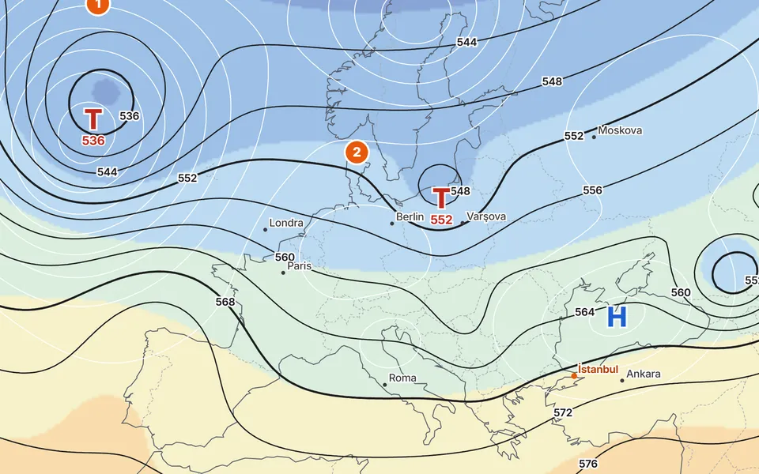
MTO 302EHava Analizi ve Öngörü
8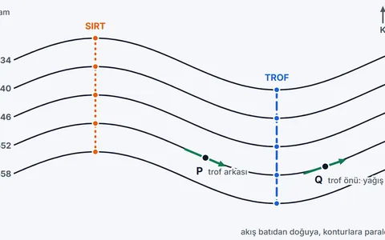
SYNOP soru çözümleriPDF ile eş zamanlı · 9 soru, 22 kavram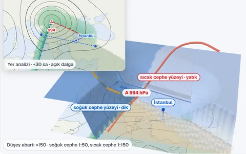
Harita OkuluDers, harita, sınav provası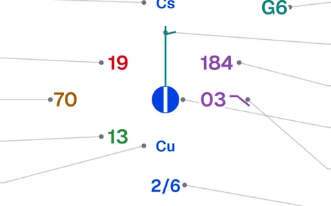
SYNOPKodu çöz, istasyon modelini kur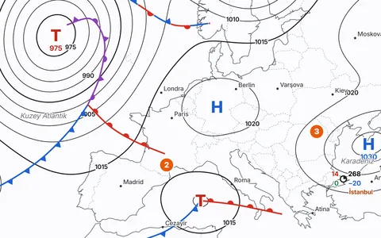
Brifing atölyesiSinoptik brifing adım adım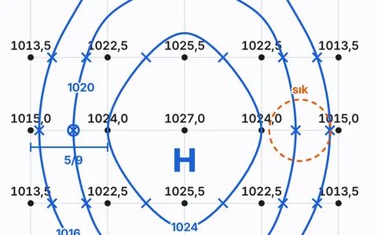
Soru çözümleri9 harita sorusu, adım adım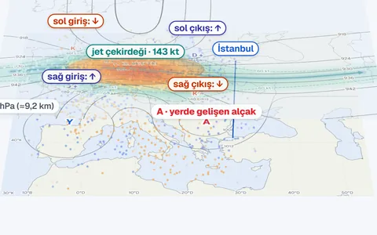
Harita laboratuvarlarıJet, trof, cephe: 3B’de çevir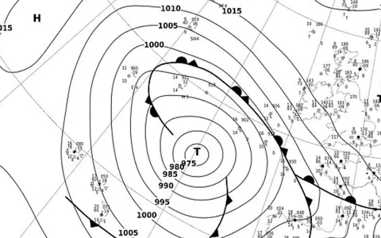
Brifing örneğiHer harita tık tık, olası sorular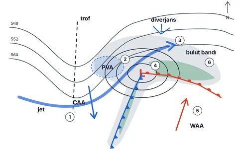
Hava analizi proje rehberiBrifing ve rapor: adım adım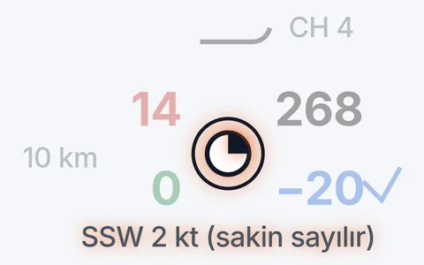
Brifingde SYNOPİstanbul mesajı, grup grup
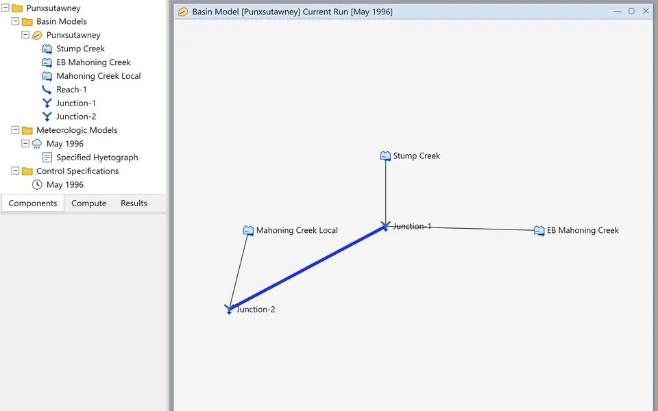
MTO 316Hidrometeoroloji
5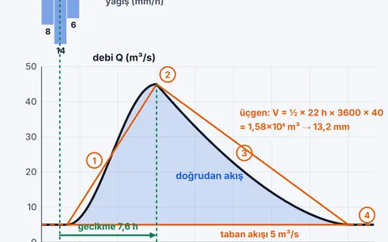
Hidrometeoroloji soru çözümleriPDF ile eş zamanlı · 45 soru, 36 kavram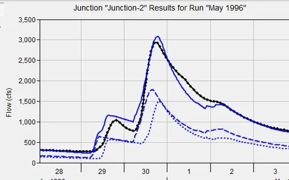
HEC-HMS okuluBenzetim: dokun, gör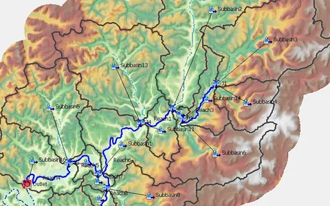
HW#3 rehberiGIS ile havza modeli: 30 adım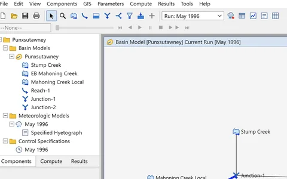
HEC-HMS ödevleriÖdev rehberleri, adım adım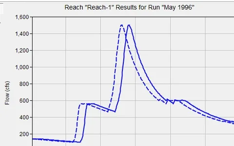
Ödev ve quiz hazırlığıHafta hafta konular, olası sorular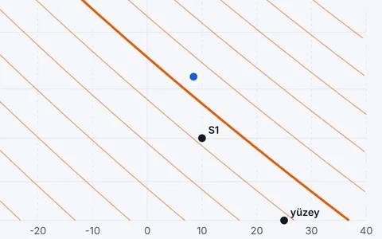
Ders KitaplığıSoru-çözüm kitapları
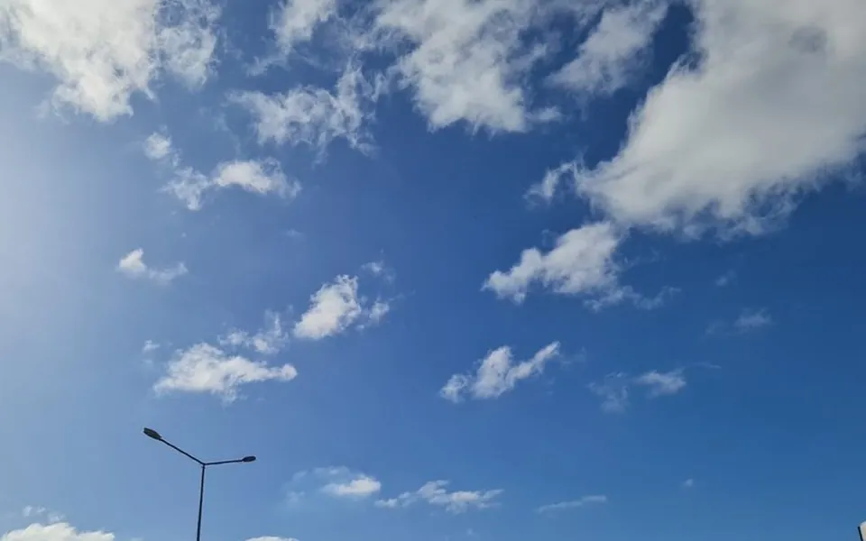
MTO 229EBulut ve Yağış Fiziği
4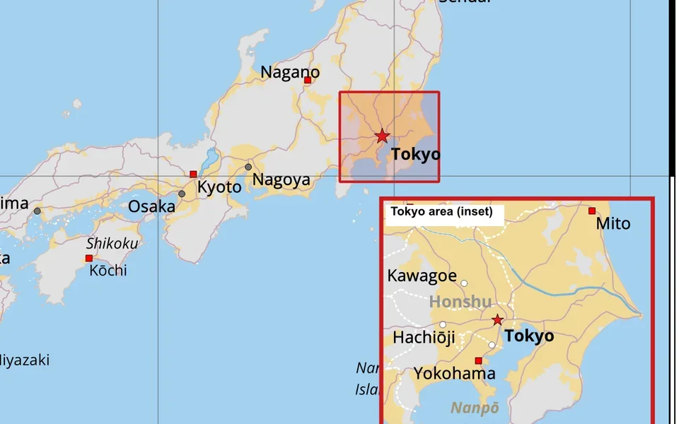
MTO 388Coğrafi Bilgi Sistemleri
1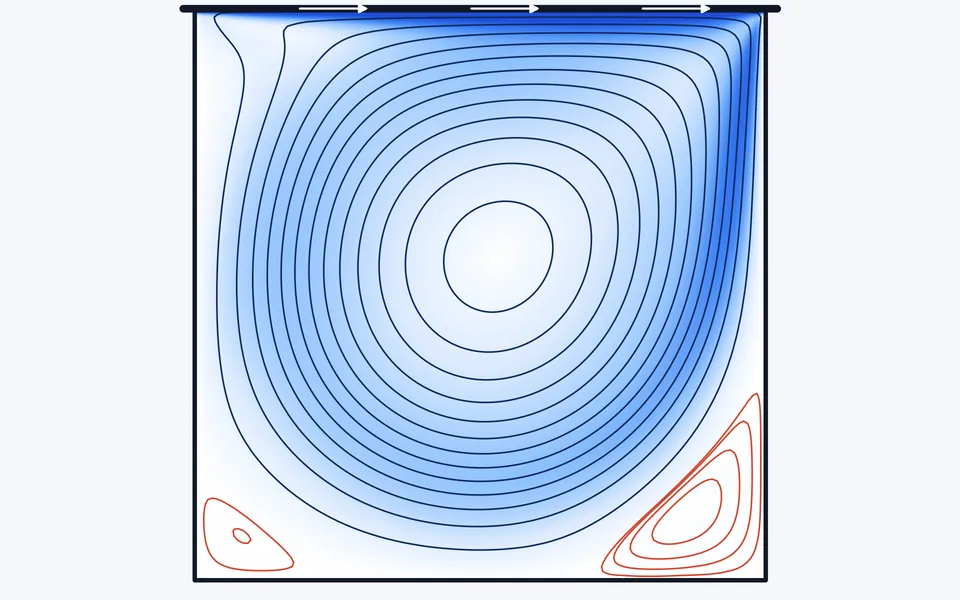
MTO 303EHesaplamalı Akışkanlar Dinamiği
2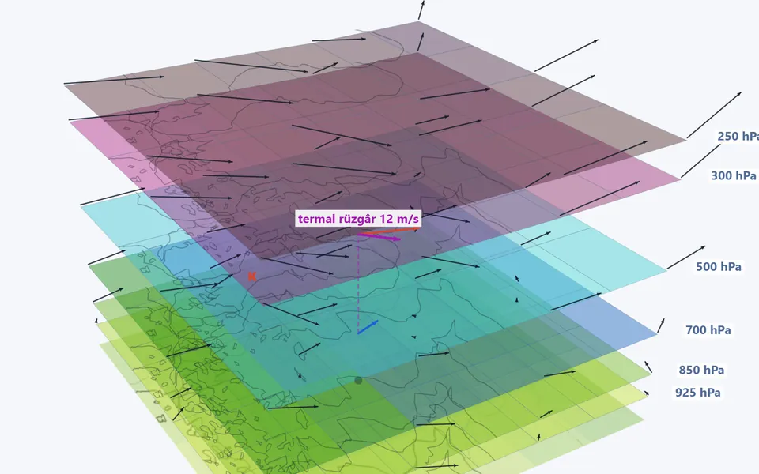
AKADEMİMüfredatın tamamı
19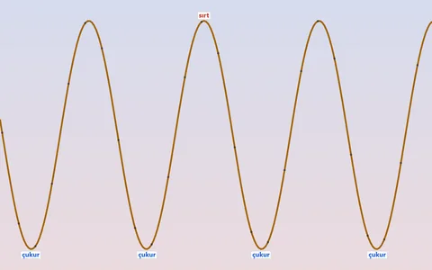
ÖğrenDersler, müfredat, konular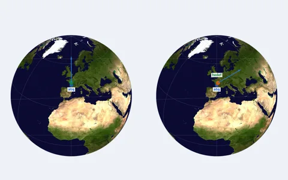
DeneSimülasyon, kavram, ispat, 3B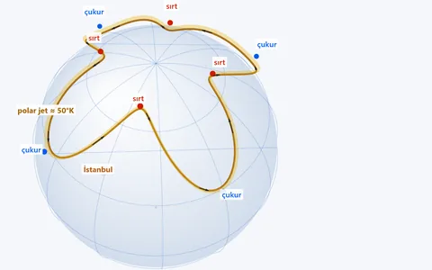
BaşvurTerim, formül, kaynak, kodlar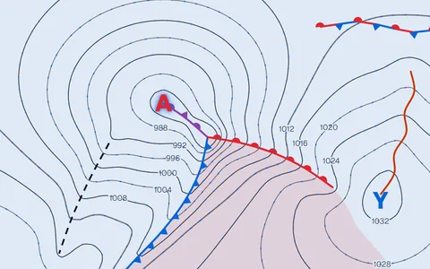
UygulaProje, havacılık, canlı atmosfer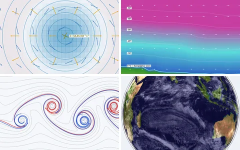
BenimKaldığın yer, yıldızların, ayarlar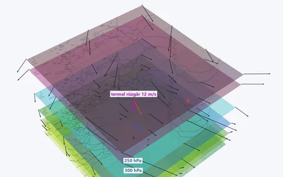
Atmosfer 3BBasınç seviyeleri üst üste levhalar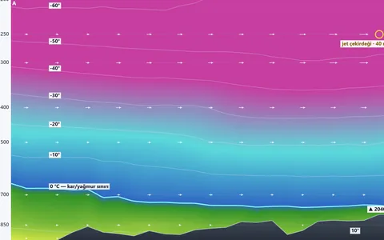
Dikey kesitAtmosferi bir hat boyunca kes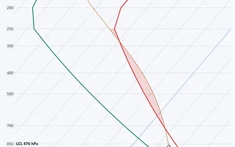
Skew-T diyagramıDiyagramı parça parça kur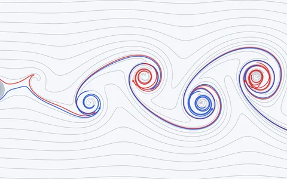
Girdap sokağıDüzgün akış ne zaman bozulur?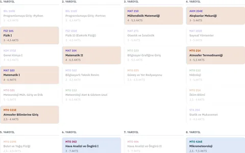
Müfredat haritası64 ders ve önşart zinciri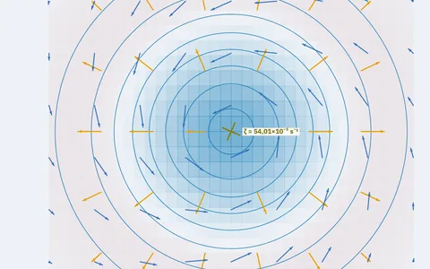
Laboratuvar19 simülasyon, 59 ispat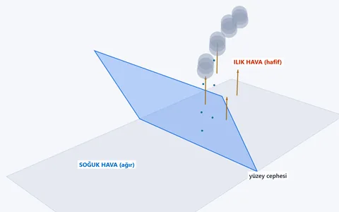
Ansiklopedi356 terim, 113 formül, 16 3B şekil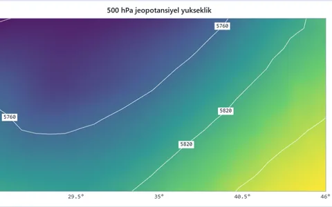
Kod atölyesi44 kod örneği, tarayıcıda konsol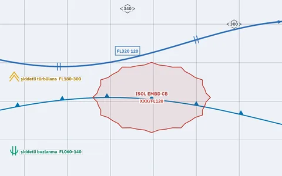
Havacılık meteorolojisiMETAR, TAF, SIGMET, SWC kartı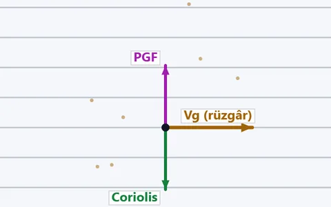
Dinamik ders kartları20 kart: denklem ve terimler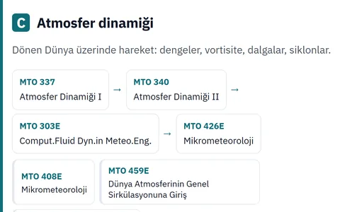
KonularBir fikrin dersten derse yolu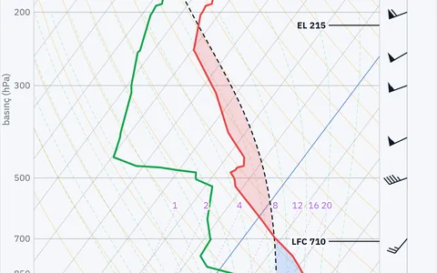
Kaynaklar ve veriVeriyi nereden, nasıl alacağın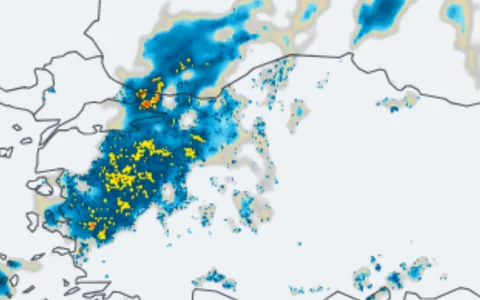
Canlı atmosferRadar ve uydu, ders gözüyle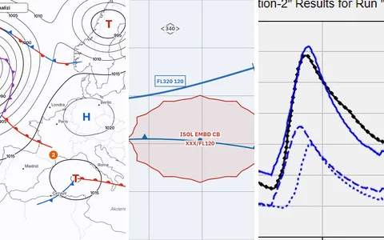
KariyerHangi bilgi hangi işte değerli
Eşleşen bölüm yok. Başka bir kelime dene: «SYNOP», «bulut», «HEC-HMS».